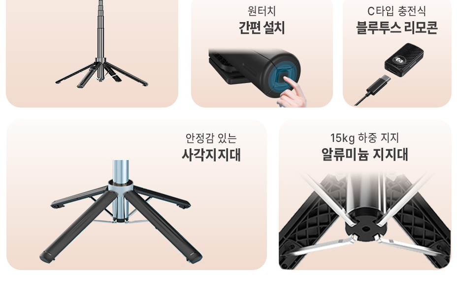
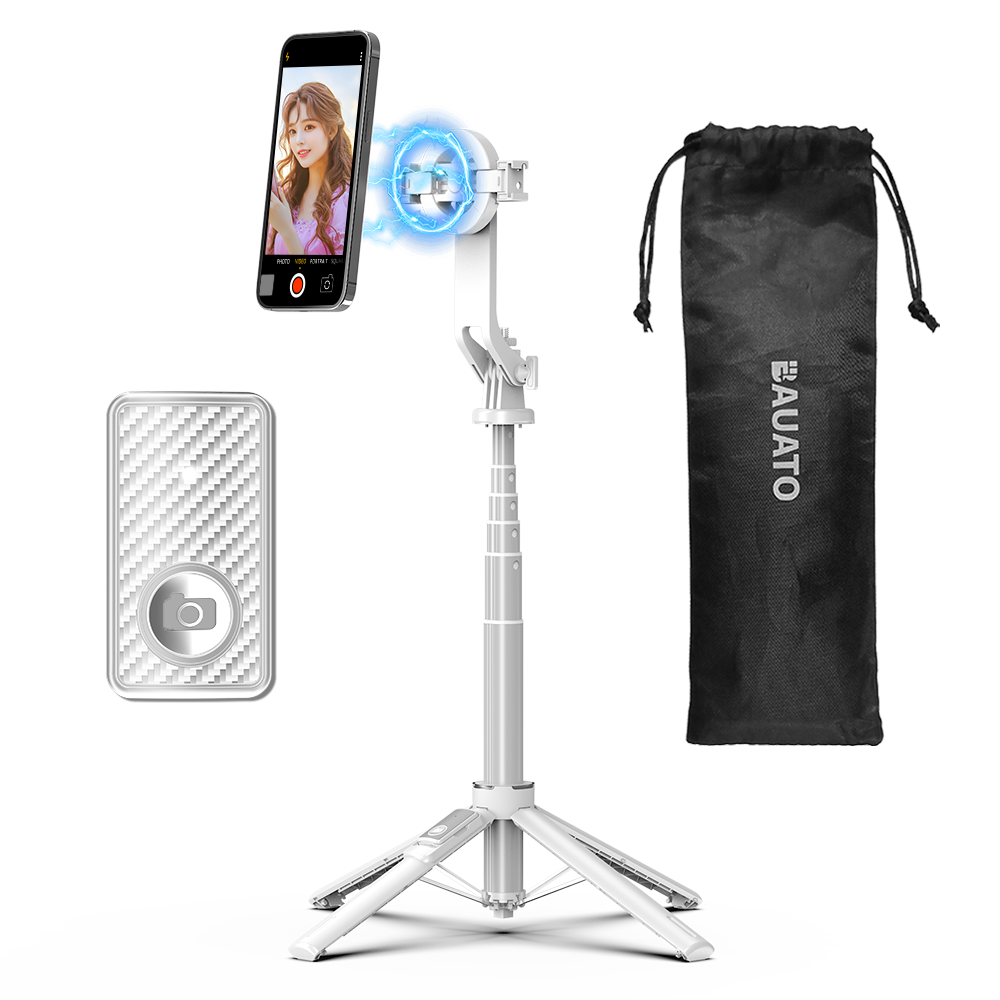
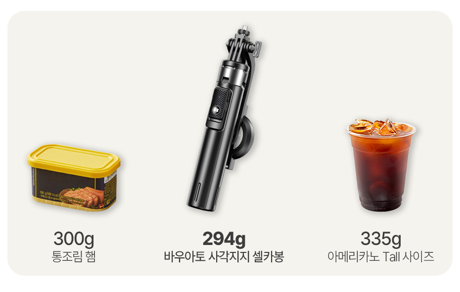
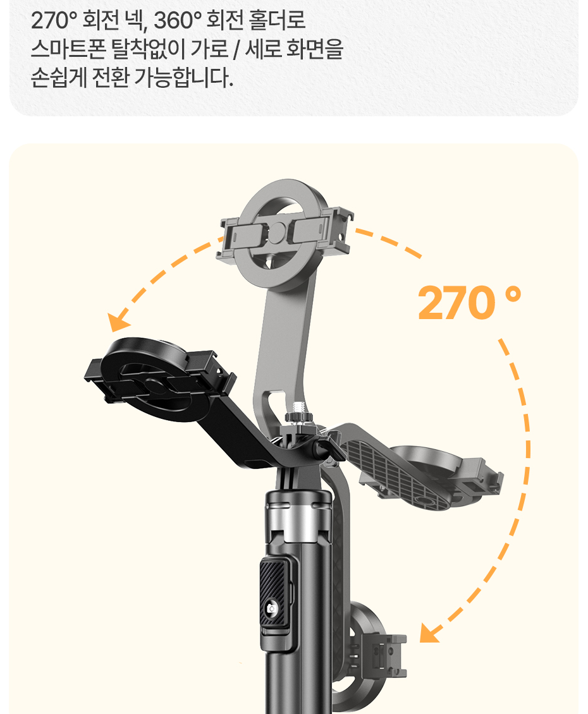
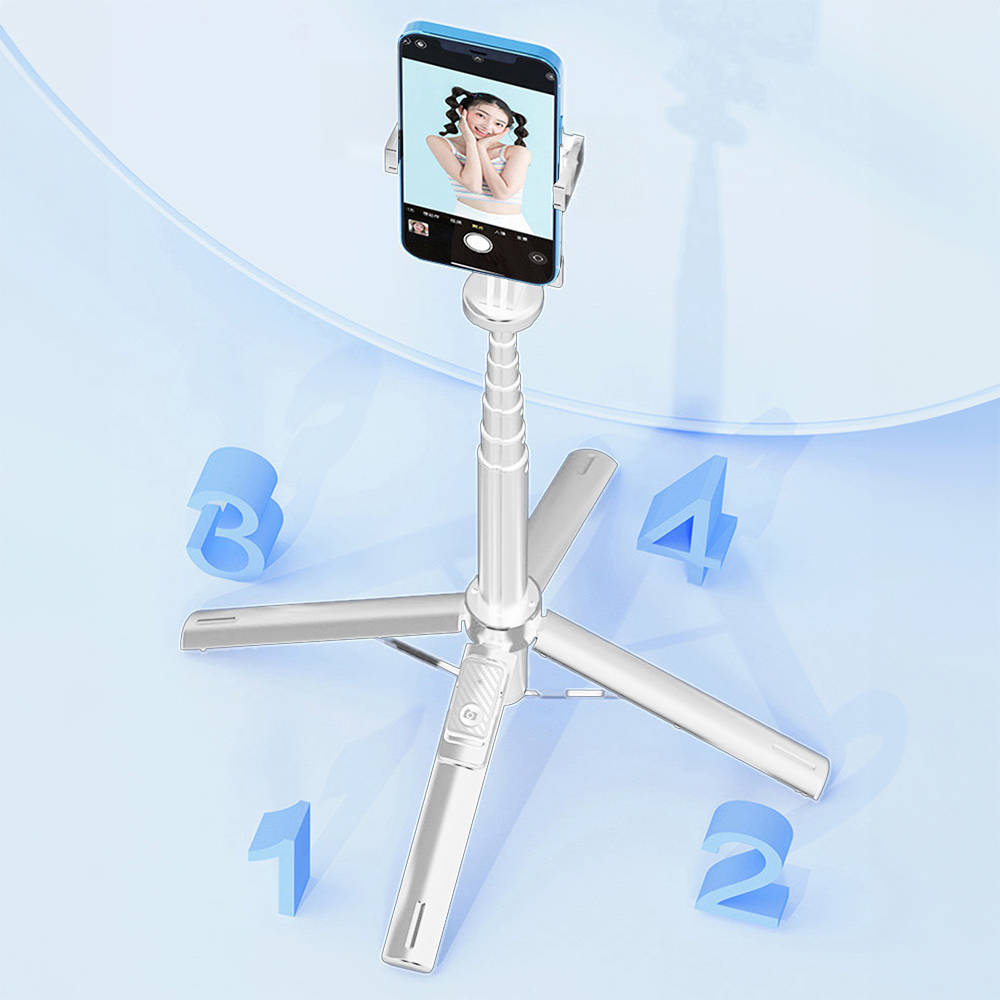
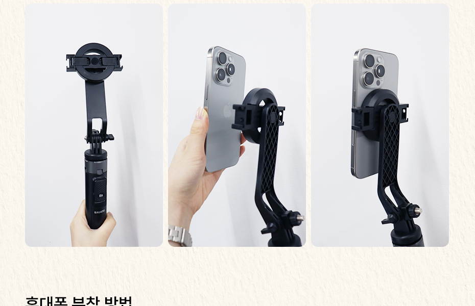
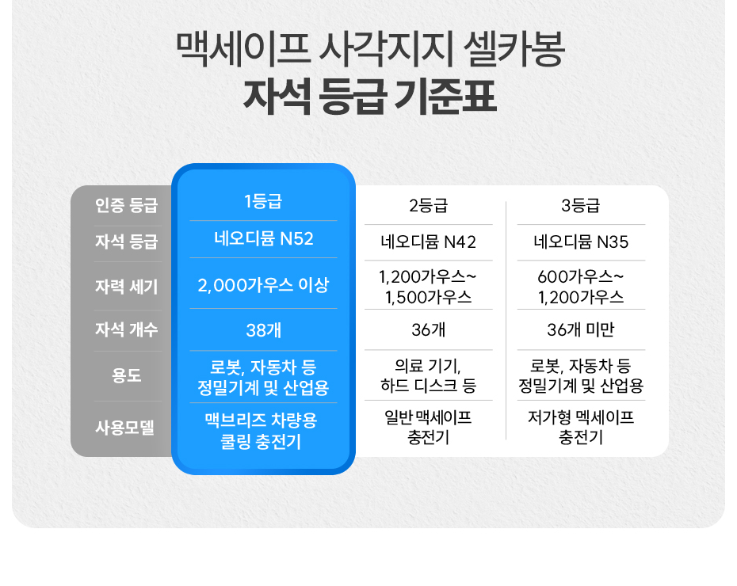
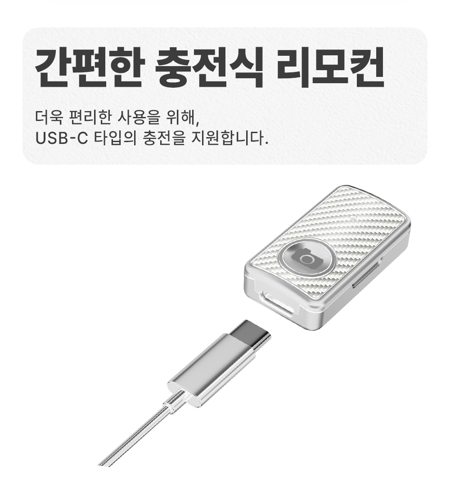

광각 렌즈에
솟아나는 삼각대 발
전신 비율과 시원한 배경을 담고 싶은데, 화면 아래 찍힌 다리 때문에 결국 영상을 크롭하게 됩니다.

0.5배 광각 릴스를 찍는 당신에게
이 포스팅은 쿠팡 파트너스 활동의 일환으로, 이에 따른 일정액의 수수료를 제공받습니다.
내 삼각대의 불편, 3초 만에 보기
N52급 자석 헤드
넓은 4각 지지
THE REAL PROBLEM
전신 비율과 시원한 배경을 담고 싶은데, 화면 아래 찍힌 다리 때문에 결국 영상을 크롭하게 됩니다.

카페 테이블이나 야외에서 촬영할 때, 작은 진동에도 스마트폰이 넘어질까 촬영보다 폰을 더 신경 쓰게 됩니다.
예쁜 장소에서 빠르게 찍고 싶어도, 집게와 나사를 만지는 동안 타이밍과 자연스러운 표정이 사라집니다.

모든 기능은 더 빨리 설치하고, 더 넓게 담고, 더 편안하게 기다리기 위해 설계됐습니다.
01 / WIDE TILT
광각을 켜면 화면 하단에 걸리는 삼각대 발
270도 회전 넥으로 스마트폰을 전진 배치해 더 넓은 구도

02 / FOUR LEGS
좁은 지지 면적 때문에 마음 놓기 어려운 거치
네 개의 다리가 넓게 접지해 평지 촬영에 안정감을 더함

03 / MAGNETIC SETUP
뻑뻑한 집게를 벌리고 나사를 조이는 설치 시간
자석 헤드에 가까이 대면 빠르게 시작하는 촬영

DETAILS THAT PROVE IT

N52 MAGNET
스마트폰을 안정적으로 붙일 수 있도록 설계된 자석 헤드입니다.
ONE-TOUCH FLOW
“광각 모드에서도 다리가 안 보여서, 배경까지 시원하게 담기 좋아요.”
“사각 다리라 평지에서 세워두고 찍을 때 훨씬 마음이 놓입니다.”
“자석으로 붙이고 바로 촬영해서 혼자 찍을 때 특히 편해요.”
사용 환경을 먼저 확인하면, 더 편하게 선택할 수 있습니다.

맥세이프 기능이 없는 스마트폰이나 케이스에는 구성품 또는 별도 메탈링을 부착해 사용할 수 있습니다. 기기와 케이스의 재질을 먼저 확인해 주세요.
평지에서는 넓은 사각 지지면으로 안정적으로 거치할 수 있습니다. 바람이 강한 야외에서는 높이를 1~2단 낮춰 사용하는 것을 권장합니다.
리모컨은 C타입 케이블로 충전합니다. 촬영 전 충전 상태를 확인하고, 장기간 사용하지 않을 때는 전원을 꺼서 보관해 주세요.
READY FOR THE WEEKEND
본체부터 C타입 리모컨, 파우치, 메탈링까지. 처음부터 필요한 구성을 한 번에 담았습니다.
이 포스팅은 쿠팡 파트너스 활동의 일환으로, 이에 따른 일정액의 수수료를 제공받습니다.
비바넥사 공식 AS 고객센터 070-4768-5403